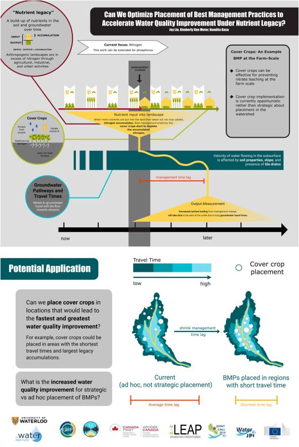

Chapter 7 Communicating your research
Science communication is a critical part of the research process. While the most common way for researchers to disseminate their research is through publishing papers in journals or presenting at scientific conferences, there can be many hurdles for someone to access and understand your research (paywalls, language barrier, jargon, etc.). Thus, communicating your research in a variety of ways is essential for reaching different audience groups.
7.1 Stakeholder Infographics
Our research papers can be long and full of necessary details, but there is usually one or two central messages that you want to convey. When communicating your research to someone that doesn’t have the time to read all the details, you need to be able to convey your message in a concise and helpful manner - in these cases, the text or figures in your paper may not be the most effective way to do it. Infographics are a way to extract the key points and ideas and display them in a simple manner. Below is one that I made on small wetlands, as well as another on nutrient legacies made by a talented colleague (Joy Liu).


7.2 Up-Goer Five Challenge
Tailoring your message to your intended audience can be difficult. We often rely on scientific jargon, but these words are can be difficult to understand outside academia, or even outside your research niche. The Up-Goer Five Challenge, inspired by the xkcd comic, is a more extreme and often humorous attempt to distill your research using the most commonly used thousand words in the English language. Check out some videos from an AGU conference session, and below was one of my submissions.
While limiting yourself to the most common ‘ten hundred’ words is a useful exercise, it’s not necessarily the easiest or most effective way to communicate your work. It takes practice and a good understanding of your audience to convey your message!